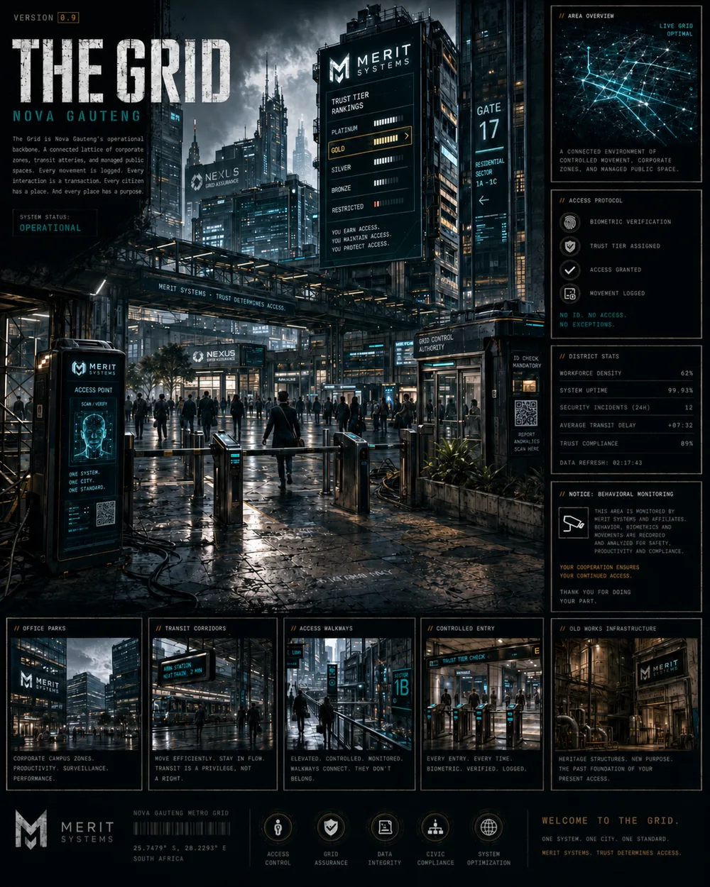

South African Animals & Biomes
A Colouring Adventure introducing young explorers to 32 South African animals and 10 environments through colouring, facts, maps and activities.
82 pages32 animals10 environments
View the book
A status-led view across the Veni portfolio—without turning planned work into promises.
A Colouring Adventure introducing young explorers to 32 South African animals and 10 environments through colouring, facts, maps and activities.

Current events are framed factually, tested through six fictional analytical lenses and closed with synthesis.
Explore the briefing format →
Scripture, reflection and devotional imagery designed as small moments of prayer, perspective and faithful practice.
Explore Veni Faithful →
A near-future South African retelling of Daedalus and Icarus set in Nova Gauteng, where access, movement and institutional trust are increasingly scored by systems.
Enter Nova Gauteng →